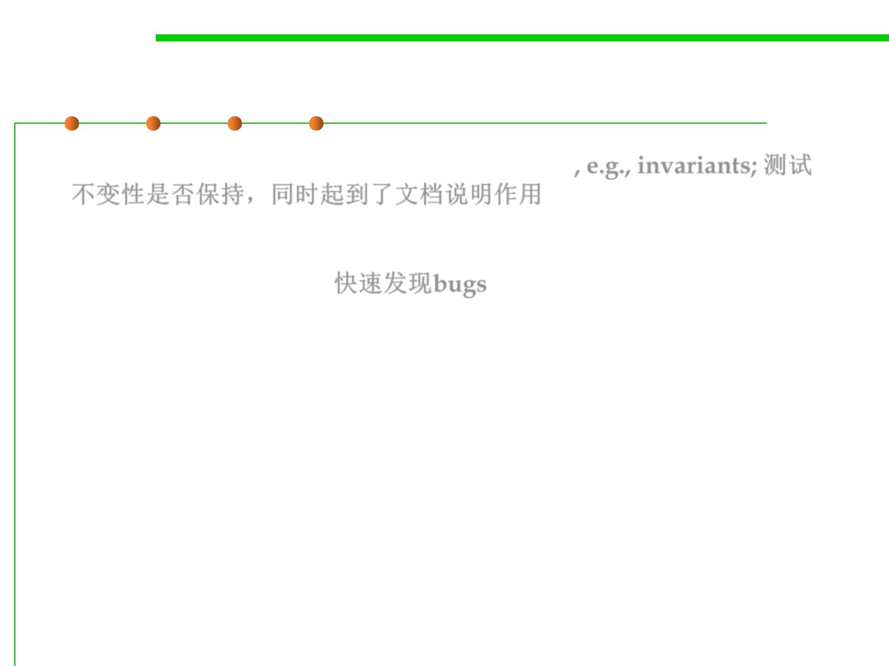

Why use assertions?
7.3 Assertions and Defensive Programming
▪ Document & test programmer‘s assumptions, e.g., invariants; 测试
不变性是否保持，同时起到了文档说明作用
▪ Verify programmer’s understanding
▪ Quickly uncover bugs 快速发现bugs
▪ Increase confidence that program is bug-free
▪ Asserts turn black box tests into white box tests